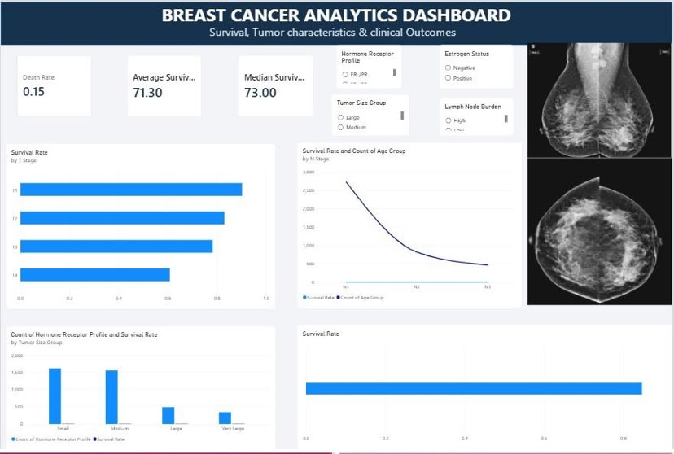
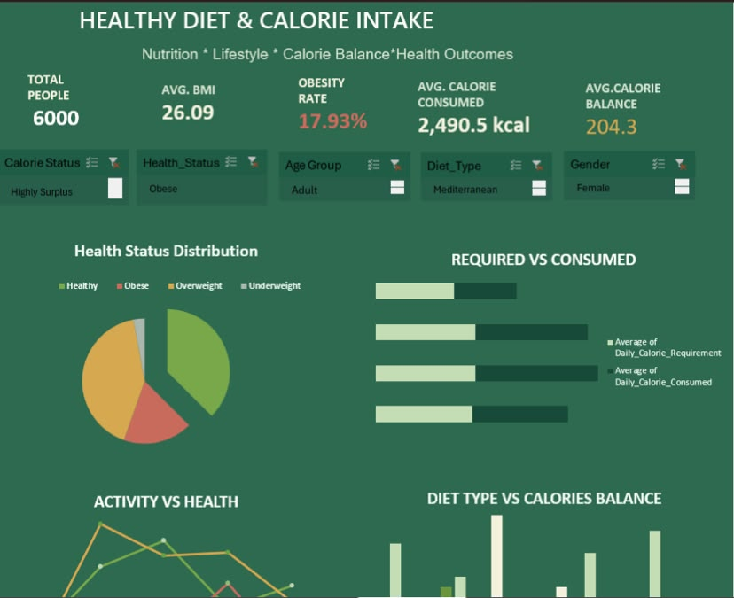
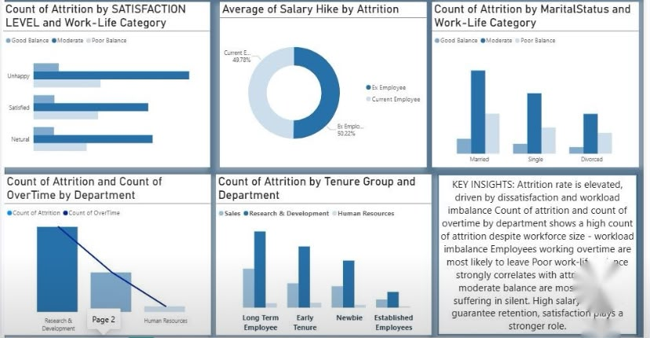
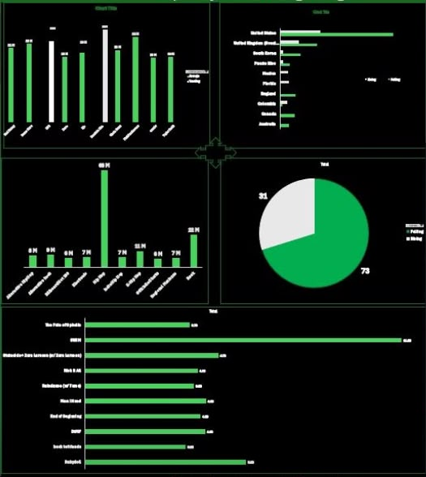

Power BI
Interactive dashboards, data modelling, DAX measures and business-focused reporting.
DATA ANALYST · BUSINESS INTELLIGENCE
I'm Okwara Elizabeth Ibem, a Data Analyst with a B.Sc. in Physics. I build clean, interactive dashboards in Power BI and Excel, using data preparation, DAX and thoughtful visual storytelling to make complex information easier to act on.
01 / ABOUT
I am a data analyst with a B.Sc. in Physics and a practical approach to analytics: check the assumptions, test the logic, and trust a number once it holds up.
My work turns raw datasets into clean, interactive dashboards using Power BI, Power Query, DAX and Excel. My projects cover healthcare, telecom, HR, nutrition and music data, with each analysis focused on useful questions rather than decoration.
02 / TOOLKIT
My strongest work sits at the intersection of analysis, visualisation and business questions.
Interactive dashboards, data modelling, DAX measures and business-focused reporting.
PivotTables, slicers, Power Query, calculated fields and dashboard development.
Basic querying and data exploration for turning structured data into answers.
Basic data analysis and scripting, with a focus on building stronger analytical workflows.
Cleaning, transforming and preparing datasets before analysis and visualisation.
Versioning and presenting analytics projects in a clear, accessible portfolio.
03 / SELECTED WORK
Five portfolio projects spanning healthcare, nutrition, telecom, people analytics and music.

Exploring patient characteristics, cancer progression, tumour features, lymph-node involvement and recorded outcomes.

Analysing calorie balance, activity, diet type, BMI categories, macronutrients and demographics.
.jpeg)
Examining churn across plans, devices, states, tenure, purchases, data usage and customer segments.

Connecting satisfaction, work-life balance, overtime, tenure, income and job role to employee attrition.

Exploring streaming performance across tracks, artists, genres and countries, with interactive slicers.
04 / EXPERIENCE
A growing career focused on business intelligence, data analysis and continuous learning.
QurateHQ · Remote
Techeccentric Consulting
TS Academy · Remote
Michael Okpara University of Agriculture, Umudike
05 / CONTACT
I'm open to data analyst opportunities, collaborations and conversations about turning data into useful decisions.